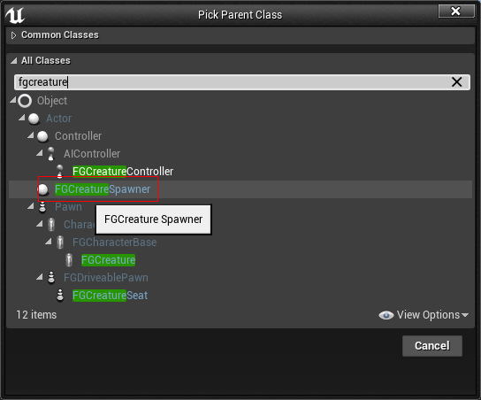
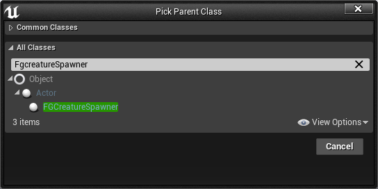

Hello everyone, I’m creating a mod in which you can put a mob spawner using the creation tool. But I had problems with their spawn, 25 seconds after they appeared in the world, they disappear (my way of creating them in 1 picture). I found a ready-made class ‘FgCreatureSpawner’ in the Blueprint class, but I could not get the mobs to appear in the way the developers intended.
From this I have 2 questions:
How can I make mobs stop despawning if I use my own method? and
How do I need to use ‘FgCreatureSpawner’ correctly?
Thanks in advance for your answers.
How to make a mob spawner?

‘FgCreatureSpawner’
Hey my dude! I’ve made a mod icon for you but you aren’t on the Discord. join up and have a look in #art 
Also: You’ll get promoted up, and have access to modder-only channels.
Hi, I’ve never really worked with Blueprints, but I have been a programmer for longer than I care to remember. As such, I think I have spotted your problem.
The main problem is that you’re not checking the return value from the spawner routine - If the spawner routine works, then you don’t need to go round the loop again. Currently you loop spawning continuously until (probably) unreal engine gets fed up and kills the routine. As part of it’s garbage cleaning up, it removes anything that your routine has created - hence the nodes disappear.
Ok, I wrote to you on discord
I don’t think the point is that unreal engine cleans the trash. After all, I have spawners without a loop. In addition, if you spawn buildings in a cycle, they do not disappear. But you gave me a very interesting idea. I will try to pull the mob directly from the game files and spawn it as a handcrafted structure.
i found your mod but am unsure of how it works… can you advise me on how to set it up?
I wrote to you in private messages.
Hi, you were right after all. But the mobs were not removed by ue4 itself, but by some plugin responsible for optimizing the living creatures of the game itself. But I was able to learn how to use ‘FgCreatureSpawner’ so I didn’t bother with it. Thank you for your trying to help.
(If someone needs a text: '[2021.10.18-14.58.35: 117] [441] LogReplicationGraph: Warning: Attempted to remove Build_AlphaHog_Loop_C_2147477285 from list ReplicationGraphNode_GridCell /Engine/Transient.FGReplicationGraph_2147481539:ReplicationGraphNode_GridSpatialization2D_2147481538.ReplicationGraphNode_GridCell_2147480423 but it was not found. (StreamingLevelName == NAME_None) '.)
How to use ‘FgCreatureSpawner’.
- You need to create some kind of world-placeable building as they say in the ‘Satisfactory Modding Documentation’.
(https://docs.ficsit.app/satisfactory-modding/latest/Development/BeginnersGuide/SimpleMod/buildable.html) - Create ‘FgCreatureSpawner’.
 - Attach ‘FgCreatureSpawner’ to the components.
- I recommend editing ‘FgCreatureSpawner’ in the attached file to the building, since 2 creatures will spawn and the spawner attached to the components of the building and the one that you created is responsible for the setting. Therefore, you can set the number of creatures to appear on 0 in the created file in the form of a blueprint class (the main thing is to set any creature in the M Creature Class, since there is a possibility of an error). And edit the attached file for the building.
- After that, I recommend removing the collider mesh from your building in order to avoid errors (since any time your building is removed from the world, the game will crash with an error in the mob’s AI system).
- After that, I recommend changing the collision collider near the mob spawner itself so that it does not block buildings.
- Creatures appear only after restarting the world, so you need to save the game and load immediately.


{kind=link}
Hi could you join the modding discord? it’s a lot easier to get help on there since basically, no one uses these forums but a select few. you will find a lot more help from other mod makers on issues, how to, etc
here’s a link:https://discord.gg/satisfactorymodding
hey! just seen your latest post, that can come real handy for other devs. we got a dedicated channel for tutorials and how to. you can post that there!
best regards: chicken
You’re welcome - I did say “Probably”